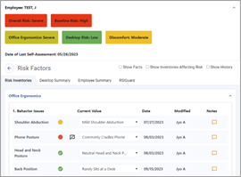
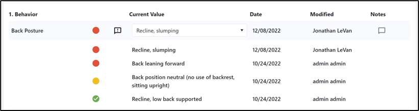
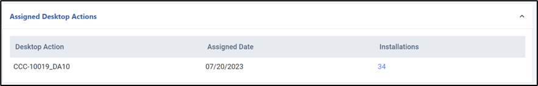
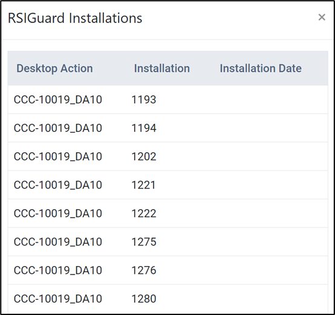

In the Ergonomics cloud menu, choose Manage Employee Risk, then select an employee.
Color indicators at the top of the page reflect the employee’s overall risk, the risk for each risk type captured (e.g. office ergonomics, discomfort, etc.), and the status of their currently selected risk inventory values. System settings control when (day of the week, time of day) risk calculations are updated. You can toggle this view to only Show Inventories Affecting Risk.

The Risk Inventories tab displays all the risk inventories (the elements that are evaluated, such as chair height or back posture) and the risk inventory values for the employee. A risk inventory has multiple possible responses, each with a value and multiplier to generate a risk score. These risk inventories are grouped by profile (the jobs that the employee is assigned to) and then by category. In the example above, the Office Worker profile contains at least two categories (Behavior Issues and Ergonomic Issues). Within the Behavior Issues category there are several risk inventories, including Shoulder Abduction, Phone Posture, etc.
Each risk inventory reflects the employee’s input in their self-assessment in myCority. You will see their current response as well as a color indicator reflecting the risk level associated with their response. Green represents the ideal/neutral value, and non-neutral values are shown as yellow or red depending on their calculated risk score.
If the employee selected a non-neutral value, an “issue” may be presented to them, e.g. how to resolve the problem, and their response is indicated by one of three “info bubbles”:
– the employee has not viewed the issue yet
– the employee has viewed the issue but has not marked it as resolved
– the employee indicated that they cannot resolve the issue.
Click on an inventory to view a history of values selected for that inventory; or click Show/Hide History to expand/contract all inventories.

It’s easy to scan for entries that may need your attention by looking for red or yellow risk indicators, or hand flags. You can then contact the employee to help resolve the issues with the goal of getting as many to green/neutral as possible, or at least to reduce the level of risk.
Depending on the configuration of the risk inventory, you may be able to change the inventory’s value yourself after discussion with the employee. You can capture any actions or discussions in the Notes field beside an inventory entry. Any value change made by you or the employee may result in a different risk calculation and color indicator for the specific entry as well as the calculations for the risk type shown at the top of the page.
If there are notes, the note icon is yellow. You can also view or manage all notes for an employee in the Manage Employee Risk list view.
The Employee Summary tab provides a quick view of other information related to the employee's ergonomic assessment:
The first three can be configured to change the number of records shown at a time (the default is five).
RSIGuard is Cority’s break reminder application. If you do not use RSIGuard, these tabs will not appear.
The Desktop Summary tab displays user desktop summaries for RSIGuard data:

The RSIGuard tab displays a log of connected installations of RSIGuard for the user:

Tip: RSIGuard data may also be accessed using a query built in the Query Builder. Select the "RSIGuard Data" as your source table, then build a custom report with all of the data present in that table. Once you have created a report, it can be saved and then retrieved, modified, or duplicated as needed.